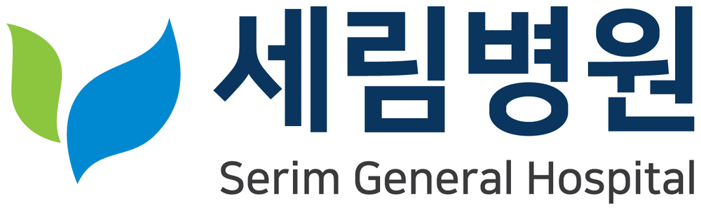

RECRUITMENT
부평세림병원
규모중소기업
지역인천 부평
분야종합병원
기업 정보종사인원 650명 · 1983년 개원
기업 및 채용 개요
현장접수 가능기업 소개
지역사회 입원·외래 진료를 담당하는 1983년 개원한 종합병원
- 모집직무
- 간호사
- 모집인원
- 00명
- 고용형태
- 정규직
- 근무지역
- 인천 부평구 부평대로 175 (부평구청역)
- 근무형태
- 3교대 근무
- 급여조건
- 신규 초임 4,500만원 이상
- 접수기간
- 2026.10.31(금) 18:00 마감 · 박람회 현장접수 가능
- 전형절차
- 서류전형 → 면접 → 최종합격
지원자격
희망전공
간호학과
자격요건
간호사 면허증 소지자 및 취득 예정자
우대사항
지역 거주자 우대
복리후생
- 장기근속수당 · 경조사비 · 명절 및 여름휴가 보너스 · 교육비 · 해외 의료봉사 활동 지원
- 본인 및 가족 의료비 지원 · 자녀 학자금 지원 · 동호회 활동 지원
- 직장어린이집 지원 · 장기근속 및 우수사원 포상